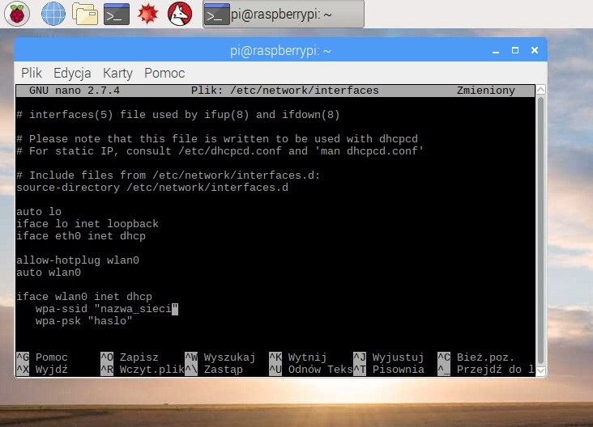

Wstępne przygotowania do samodzielnego wykonania Smart Mirror
Zanim jeszcze przystąpimy do jakichkolwiek działań związanych z konfiguracją urządzenia, systemu i samego oprogramowania Smart Mirror.pl koniecznym będzie przygotowanie podstawowych komponentów niezbędnych do uruchomienia urządzenia Raspberry Pi:
- Raspberry Pi - model nie ma dużego znaczenia (my bazowaliśmy na Rasp Pi model A), jednak w przypadku zakupu lepiej jest szukać nowszych modeli z większą mocą i wbudowanym modułem WiFi
- Monitor - nawet najprostsze modele spełnią swoją rolę, ale preferowanym jest monitor ze złączem HDMI oraz USB. W przeciwnym wypadku będzie trzeba posiłkować się przejściówkami
- Karta pamięci - minimalna pojemność to 8GB. Preferowane są wyższe klasy prędkości, ale system będzie działać również na tych niższych.
- Kabel HDMI do przesłania obrazu oraz kabel Micro USB do zasilenia "malinki"
- Czytnik kart pamięci podłączony do komputera - będzie niezbędny aby zainstalować system na karcie pamięci
Powyższe komponenty są absolutnym minimum potrzebnym do rozpoczęcia działania z urządzeniem Raspberry Pi. Dodatkowymi produktami, które przydadzą się, ale nie będą na stałe używane z urządzeniem Raspberry Pi to: kabel RJ-45 i mysz USB, których role bardziej szczegółowo opisane są w poniższych częściach poradnika.
Pobranie, instalacja oraz wstępna konfiguracja systemu Raspbian.
Poradnik został podzielony na kilka części, aby całość była bardziej przejrzysta i łatwiejsza do zrozumienia.
Pobranie obrazu i instalacja na karcie pamięci.
Potrzebne będą:
- Karta pamięci (co najmniej 8GB)
- Komputer z dostępem do Internetu i czytnikiem kart
- System operacyjny Raspbian
- Oprogramowanie do instalacji Raspbiana na karcie pamięci - Etcher
Aby móc uruchomić oprogramowanie Smart Mirror na Raspberry Pi trzeba najpierw mieć system operacyjny. Tym systemem będzie Raspbian.
- Pobieramy aktualną wersję Raspbiana ze strony: https://www.raspberrypi.org/downloads/raspbian/ (w chwili publikacji był to Raspbian Stretch)
- Pobieramy Etcher ze strony: https://etcher.io/. Spośród wielu wersji wybieramy wersję Portable, ze względu na to, że nie wymaga instalacji. Architekturę użytkownik dobiera odpowiednio do swojego systemu operacyjnego Windows/Linux.
- Po rozpakowaniu pliku *.zip z obrazem systemu wszystkie potrzebne do instalacje na karcie pamięci programy powinny prezentować się tak jak na zdjęciu.
- Uruchamiamy Etcher, pojawi się następujące okno.
- Klikamy „Select image” i wybieramy obraz systemu.
- Upewniamy się, że została wybrana odpowiednia karta pamięci klikając „Change”. Jest to istotne, ponieważ po kliknięciu „Flash!” karta zostanie wyczyszczona.
- Jeśli wszystko jest w porządku, klikamy „Flash!”, pozwalamy na wprowadzanie zmian na tym urządzeniu i czekamy, aż obraz zostanie zainstalowany na karcie pamięci.
- Gdy instalacja zostanie zakończona powodzeniem, Etcher wyświetli odpowiedni komunikat.
- Monitor z odpowiednimi złączami obrazu (np. HDMI)
- Kabel HDMI lub przejściówka umożliwiająca połączenie Raspberry Pi z monitorem
- Raspberry Pi
- Kabel zasilający dla Raspberry Pi (Micro USB)
- Mysz USB
- Kabel sieciowy
- Po włożeniu karty pamięci do „Raspa” możemy podpiąć mysz USB, kabel sygnałowy oraz zasilający. Raspberry będzie potrzebowało chwilę na załadowanie systemu. Po załadowaniu pojawi nam się pulpit Raspbiana.
Możemy od razu przejść do konfiguracji zdalnego dostępu. W tym celu (jeszcze korzystając z myszki) klikamy na ikonkę malinki, wybieramy „Preferences”, a następnie „Raspberry Pi Configuration”. - Pojawi nam się okienko, przechodzimy do zakładki „Interfaces” i zaznaczamy „VNC” jako „Enabled”.
- Klikamy „OK” i na górnym pasku po prawej stronie powinna pojawić się ikonka informująca o tym, że serwer VNC jest aktywny. Klikamy dwukrotnie na tą ikonkę i ukaże nam się okno z widocznym adresem IP, który będzie potrzebny do połączenia zdalnego.
- Przechodzimy do strony: https://www.realvnc.com/en/connect/download/viewer/ i ściągamy program VNC Viewer, który również jest dostępny w wersji niewymagającej instalacji (w tym wypadku Standalone EXE). Wybieramy odpowiednią architekturę i ściągamy aplikację.
- Po ściągnięciu aplikacji uruchamiamy ją. Wyświetli nam się okno programu, na górze wpisujemy adres IP (w tym wypadku 192.168.0.16) i wciskamy „Enter”.
- Pojawi nam się informacja o tym, że jest to pierwsze połączenie z tym adresem. Klikamy „Continue”.
- Pojawi nam się prośba o nazwę użytkownika i hasło. Standardowo jest to Username: pi Password: raspberry. W dalszej części poradnika będziemy to zmieniać.
- W tym celu ponownie otwieramy menu "malinki", wybieramy „Preferences”, następnie „Raspberry Pi Configuration”.
- W zakładce „System” klikamy na przycisk „Change Password” i wpisujemy nowe (najlepiej skomplikowane) hasło.
- Przechodzimy do zakładki „Localisation” i klikamy „Set Locale”. Uzupełniamy pola tak jak na zrzucie poniżej.
- Następnie wybieramy „Set Timezone” i również uzupełniamy według wzoru poniżej.
- Po tych krokach zgadamy się na ponowne uruchomienie systemu.
- Raspberry Pi podpięte do monitora, sieci i zasilania
- Karta sieciowa WiFi USB
- Uruchamiamy terminal klikając na ikonkę na górnym pasku
- W pierwszej kolejności wpisujemy polecenie dmesg|grep -i usb i klikamy „Enter”. Polecenie służy do wyświetlenia do wszystkich urządzeń USB wykrytych podczas startu systemu operacyjnego. Dzięki niemu upewnimy się, że „malinka” widzi nasz moduł WiFi.
- Kartę sieciową można zweryfikować po nazwie producenta, lub samego produktu.
- Gdy nasza karta sieciowa będzie widoczna może wpisać kolejne polecenie: sudo nano /etc/network/interfaces służy ono do edytowania pliku, który zawiera informacje o interfejsach sieciowych.
- Po kliknięciu „Enter” pojawi nam się okno edytora. Wklejamy do niego poniższy tekst.
auto lo
iface lo inet loopback
iface eth0 inet dhcp
allow-hotplug wlan0
auto wlan0
iface wlan0 inet dhcp
wpa-ssid "nazwa_sieci"
wpa-psk "haslo_do_sieci" - Po wklejeniu tekstu możemy zapisać plik klikając na klawiaturze kombinację „ctrl+o”, potwierdzamy „Enter”.
- Wracamy z powrotem do okna terminala kombinacją klawiszy „ctrl+x”. Ostatnim krokiem jest restart interfejsów sieciowych poleceniem: sudo service networking reload.
- Teraz możemy uruchomić ponownie urządzenie klikając na ikonę malinki i wybierając „Shutdown”, a następnie „Reboot”.
- Po odpięciu kabla sieciowego Raspberry powinno automatycznie połączyć się z siecią WiFi. Możliwe, że po restarcie interfejsów sieciowych zmieni się adres IP. Aby sprawdzić jaki jest nowy adres, będziemy musieli ponownie skorzystać z myszki USB. Sam adres sprawdzimy po otwarciu panelu serwera VNC.


Po wykonaniu tych kroków mamy zainstalowany system Raspbian na naszej karcie pamięci.
Wstępna konfiguracja systemu Raspbian na urządzeniu Raspberry Pi.
Potrzebne będą:
Do wcześniejszych prac paradoksalnie urządzenie Raspberry Pi nie było nam potrzebne, ale przygotowany uprzednio obraz trzeba na czymś uruchomić :)
Po włożeniu do „Raspa” karty pamięci z systemem, podpinamy kabel sygnałowy do złącza HDMI, kabel zasilający do złącza Micro USB, kabel sieciowy do złącza RJ-45. Teraz możemy przejść przez wstępną konfigurację, która umożliwi nam zdalny dostęp do systemu poprzez VNC, pozwoli zmienić standardowe hasło na własne oraz zmienimy język systemu i ustawimy poprawną strefę czasową.
Zacznimy od konfiguracji serwera VNC
Teraz zmienimy hasło dostępowe.
Ostatecznie zmieniamy język i strefę czasową.
Konfiguracja opcjonalnej karty sieciowej WiFi USB. Tą część poradnika mogą pominąć posiadacze nowszych modeli Raspberry Pi, które posiadają wbudowany moduł WiFi.
Potrzebne będą:
W tym momencie poziom trudności rośnie, ponieważ będziemy działać w terminalu. Bez obaw, precyzyjne instrukcje pozwolą przejść bez problemu przez proces konfiguracji.
sudo służy do wykonania polecenia z prawami roota (Linuxowy administrator), nano jest edytorem tekstu wbudowanym w system, który pozwoli nam edytować zawartość pliku interfaces znajdującego się w ścieżce /etc/network

W tym momencie mamy przeprowadzoną konfigurację Raspberry Pi. Następnymi krokami będzie przygotowanie bibliotek, aby aplikacja Smart Mirror działała poprawnie.